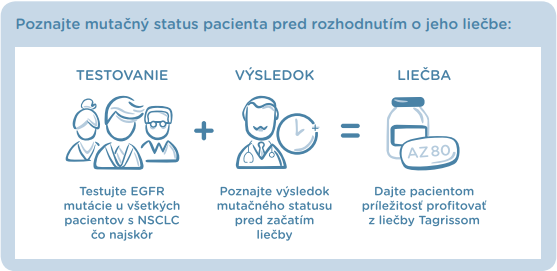

| Karcinom 20231209 |
| {{customText[Vážená pani doktorka, vážený pán doktor|Vážená pani doktorka|Vážený pán doktor|Vážený pán profesor|Vážená pani profesorka|Vážený pán docent|Vážená pani docentka|Vážená pani primárka|Vážený pán primár]}}, |
| Vzorky tkaniva z histologicky potvrdeného nemalobunkového karcinómu pľúc sa vyšetrujú na prítomnosť špecifických mutácií v oblasti EGFR génu a ich diagnostika má dôležitý prognostický a terapeutický význam u pacientov s NSCLC v akomkoľvek štádiu. |
|  |
| Súčasné možnosti vyšetrenia genetických mutácií u pacientov s NSCLC diskutovala RNDr. Lucia Fröhlichová, PhD. v rámci svojej prednášky s názvom Ako a prečo testovať EGFR mutácie pri NSCLC. |
| Po prezretí prednášky môžete absolvovať Autodidaktický test. |
| Spustiť prednášku s Autodidaktickým testom |
|
Odborná aktivita je zaradená do systému kontinuálneho vzdelávania
lekárov a v čase platnosti AD testu sú jej pridelené 2 kredity CME.
V prípade potreby a záujmu o akékoľvek doplňujúce informácie ma prosím neváhajte kontaktovať. Ďakujem. S úctou {{userName}} |
|
AstraZeneca AB, o.z. Lazaretská 12, Bratislava, 811 08 TEL: +421 257 377 777 www.astrazeneca.sk |
|
EGFR, Receptor epidermálneho rastového faktora; NSCLC, Nemalobunkový karcinóm pľúc
Nežiaduce udalosti s najčastejším výskytom u pacientov liečených osimertinibom boli hnačka, kožné vyrážky, suchá koža a paronychia. 1 REFERENCIE 1. Mok TS, WU YL, AHN ML, et all. Osimertinib or platinum-pemetrexed in EGFR T790M positive lung cancer, N Engl J Med. 2017 Feb 16;376(7):629-640. doi: 10.1056/NEJMoa1612674. Výdaj lieku je viazaný na lekársky predpis. Pred predpísaním si prosím preštudujte informáciu o lieku. Úplná informácia o lieku je k dispozícii v Súhrne charakteristických vlastností lieku dostupnom na adrese: AstraZeneca AB o.z., Lazaretská 12, 811 08 Bratislava, na stránke https://www.ema.europa.eu/en/documents/product-information/tagrisso-epar-product-information_ sk.pdf alebo ju získate po oskenovaní tohto QR kódu: |
|
Tento e-mail je určený výhradne pre zdravotníckych pracovníkov. Informácie o ochrane osobných
údajov nájdete tu. Ak si neprajete dostávať e-mailovú komunikáciu, prosím kliknite tu. |
| Dátum prípravy: december 2023 | SK-1475 |